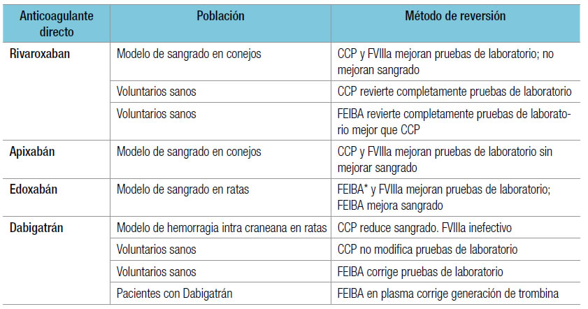
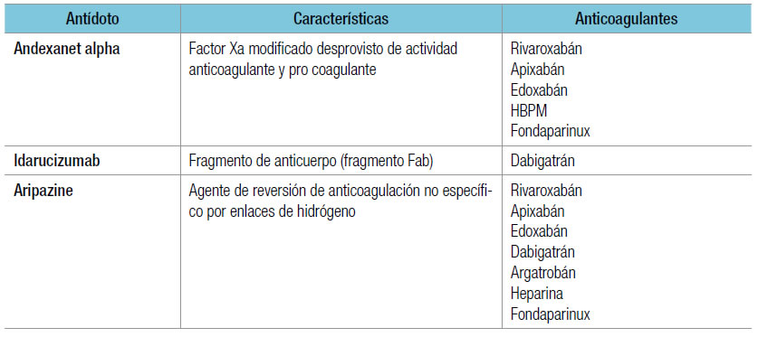
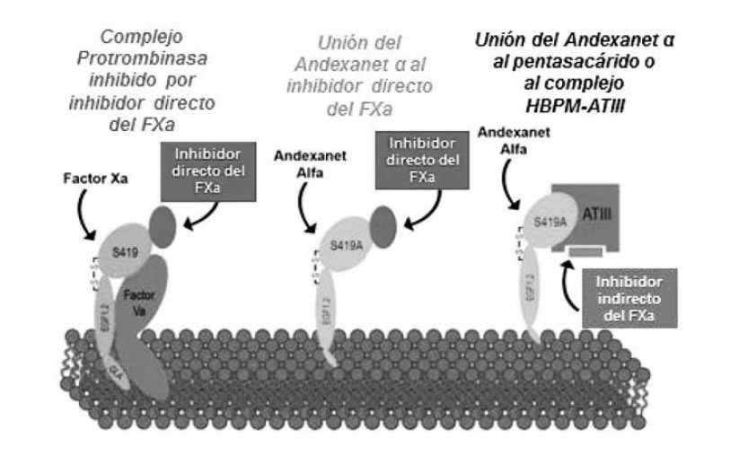

¿QUÉ ANTÍDOTOS Y PROCOAGULANTES HAY EN LA ACTUALIDAD PARA LOS PACIENTES EN TRATAMIENTO CON ANTICOAGULANTES?
90
La palabra antídoto literalmente se refiere a los fármacos que inactivan en forma directa un agente
específico. Un ejemplo es la protamina con la heparina. Un agente procoagulante no es un antídoto
en el sentido estricto, ya que tiene la función de saltear el efecto anticoagulante, neutralizando su
efecto, pero no inactivando o eliminando el fármaco.
REVERSIÓN DEL EFECTO DE LOS DICUMARÍNICOS
1. Vitamina K (VK): en ausencia de sangrado, un paciente con RIN > 4,5, además de suspender
el anticoagulante, puede o no recibir VK oral 1,25 mg (1/8 de una ampolla de 10 mg). No
hay diferencias en cuanto a sangrado mayor o rebote tromboembólico con ambas conductas.
Cuando hay sangrado relevante es esencial administrar VK, preferentemente por vía intravenosa.
Su acción se inicia a las 2 horas y la RIN se normaliza en 12 horas. Por vía oral, estos
tiempos se duplican (24 horas). No debe emplearse la vía intramuscular ni la vía subcutánea
(tiene absorción irregular). La dosis habitual es de 5 mg; dosis mayores pueden dificultar el
reinicio posterior de los dicumarínicos. Para disminuir el riesgo de anafilaxia se sugiere diluir
los 5 mg en 20 cm3 de solución fisiológica y administrar en 20 minutos.
2. Concentrados de complejo protrombínico (CCP): en la Argentina sólo se comercializan
concentrados de cuatro factores (factores II, VII, IX y X). En los Estados Unidos hay más
experiencia con concentrados de tres factores (sin factor VII). En teoría, el concentrado de
plasma fresco (PFC) tiene un efecto similar, pero a expensas de volúmenes por infundir
elevados y frecuentemente no tolerados, excepto en infusiones muy lentas, por lo que no es
práctico para emergencias. La dosis de CCP puede ser fija (20 o 30 UI/kg), o adaptada al
peso y la RIN del paciente. En los pacientes con RIN > 5 deben emplearse al menos 25 UI/kg
y siempre con VK simultánea. El efecto es inmediato y dura más de 24 horas. Su eficacia
hemostática es cercana al 100%, según lo demuestra un estudio multinacional prospectivo.
Sarode y cols. compararon, en el único estudio aleatorizado hasta ahora, CCP 25 a 50 UI/kg
según RIN con PFC 10-15 mL/kg y demostraron la normalización de la RIN en 62,2 vs.
9,6%, con comparable efectividad hemostática. En un estudio sobre hemorragia intracraneal
traumática en pacientes tratados con warfarina, los CCP consiguieron una más rápida normalización
de la RIN y la mitad del tiempo hasta la cirugía respecto del que se obtuvo con
PFC. Otro estudio comparativo sobre hemorragia intracraneal adicionando a VK, PFC, CCP o
rhFVIIa, confirmó que los dos últimos son más efectivos que el plasma, pero con un costo
mucho más elevado si se emplea FVIIa. En el caso de utilizar rhFVIIa, la dosis necesaria
(16 UI/kg) es mucho menor que la empleada para un sangrado por hemofilia adquirida.
En resumen, no hay un antídoto para la warfarina; la vitamina K requiere tiempo hasta el comienzo
de acción. El concentrado de complejo de protrombina rápidamente corrige la RIN en la mayoría
de los pacientes con warfarina; aún así tiene un escaso impacto en el pronóstico (al menos en
pacientes con HIC, en quienes la mortalidad y la morbilidad permanecen altas).
REVERSIÓN DEL EFECTO DE LOS NUEVOS ANTICOAGULANTES
En la Tabla 1 se detallan los agentes procoagulantes para revertir el efecto de los nuevos anticoagulantes,
dabigatrán, rivaroxabán, apixabán y edoxabán, para la reversión de su efecto anticoagulante.
Los antídotos para los NACO están en fase 2, un anticuerpo monoclonal antifracción Fab dabigatrán
(aDabi-Fab) que inhibe la actividad anticoagulante de esta en el plasma humano in vitro y en
ratas in vivo. Para los anti-Xa está en desarrollo un factor recombinante (pd-factor Xa y r-factor Xa)
(andexanet ∝, Figura 1) que carece de actividad catalítica y actividad de unión a la membrana,
y en los estudios preliminares neutraliza el efecto de las pruebas de laboratorio en modelos con
animales (Tabla 2).
Tabla 1.Resumen de experiencias en animales y en voluntarios con agentes que revierten el sangrado
frente a los NACO.

*FEIBA: Concentrado de Complejo Protrombínico con factores activados.
Tabla 2. Desarrollo de antídotos para los NACO.

Figura 1.Antídoto contra inhibidores del Factor Xa (Andexanet alpha).

CONCLUSIONES
No contamos con antídotos para los agentes dicumarínicos, sino con agentes procoagulantes,
como la vitamina K, el plasma fresco congelado y el concentrado complejo protrombínico. A su vez,
estos dos últimos pueden utilizarse para antagonizar el efecto de los nuevos anticoagulantes orales.
Se encuentran en fase de investigación antídotos específicos para los NACO.
LECTURAS RECOMENDADAS
Buller H, Gallus AS, Pillion G, et al. Enoxaparin followed by once-weekly idiabiotaparinux vs. enoxaparin plus
warfarin for patients with acute syntomatic pulmonary embolism: a randomized, doublé-blind, trial. Lancet
2012;379:123-9.
Crowther MA, Ageno W, Garcia D, Wang L, Witt DM, et al. Oral vitamin K versus placebo to correct excessive
anticoagulation in patients receiving warfarin. Ann Intern Med 2009;150:293-300.
Dickneite G, Hoffman M. Reversing the new oral anticoagulants with prothrombin complex concentrates (PCCs):
what is the evidence? Thromb Haemost 2014;111:189-98.
Eerenberg ES, Kamphuisen PW, Sijpkens MK, Meijers JC, Buller HR, et al. Reversal of rivaroxaban and dabigatran
by prothrombin complex concentrate: a randomized, placebo-controlled, crossover study in healthy subjects.
Circulation 2011;124(14):1573-79.
Fukuda T, Honda Y, Kamisato C, Morishima Y, Shibano T. Reversal of anticoagulant effects of edoxaban, an oral,
direct factor Xa inhibitor, with haemostatic agents. Thromb Haemost 2012;107(2):253-59.
Godier A, Miclot A, Le Bonniec B, et al. Evaluation of prothrombin complex concentrate and recombinant activated
factor VII to reverse rivaroxaban in a rabbit model. Anesthesiology 2012;116(1):94-102.
Khoo TL, Weatherburn C, Kershaw G, Reddel CJ, Curnow J, et al. The use of FEIBA® in the correction of coagulation
abnormalities induced by dabigatran. Int J Lab Hematol 2013;35(2):222-24.
Levi M. Epidemiology and management of bleeding in patients using vitamin K antagonists. J Thromb Haemost
2009;7(Suppl. 1):103-6.
Lu G, DeGuzman FR, Lakhotia S, et al. Recombinant antidote for reversal of anticoagulation by factor Xa inhibitor.
ASH 2008;112:983.
Marlu R, Hodaj E, Paris A, Albaladejo P, Cracowski JL, et al. Effect of non-specific reversal agents on anticoagulant
activity of dabigatran and rivaroxaban: a randomised crossover ex vivo study in healthy volunteers. Thromb
Haemost 2012;108(2):217-24.
Martin AC, Le Bonniec B, Fischer AM, Marchand-Leroux C, Gaussem P, et al. Evaluation of recombinant activated
factor VII, prothrombin complex concentrate, and fibrinogen concentrate to reverse apixaban in a rabbit model of
bleeding and thrombosis. Int J Cardiol 2013;168(4):4228-33.
Neal Shah, Mohammad A. Rattu. reversal agents for anticoagulants: focus on andexanet alfa. AMSRJ
2014;1(1):16-28. En: http://dx.doi.org/10.15422/amsrj.2014.05.010.
Pabinger I, Brenner B, Kalina U, Knaub S, Nagy A, et al. Prothrombin complex concentrate (Beriplex P/N) for emergency
anticoagulation reversal: a prospective multinational clinical trial. J Thromb Haemost 2008;6(4)622-31.
Sarode R, Milling TJ, Refaai MA, Mangione A, Schneider A, Durn BL, et al. Efficacy and safety of a 4-factor prothrombin
complex concentrate in patients on vitamin k antagonists presenting with major bleeding. A randomized,
plasma-controlled, phase IIIb study. Circulation 2013;128:1234-43.
Van Ryn J, Litzenburger T, Waterman A. et al. Dabigatran anticoagulant activity is neutralized by an antibody
selective to dabigatran in vivo and in vitro models. J Am Col Cardiol 2011;57:E1130.
Woo CH, Patel N, Conell C, et al. Rapid warfarin reversal in the setting of intracranial hemorrhage: a comparison of
plasma, recombinant activated factor VII, and prothrombin complex concentrate. World Neurosurg 2014;81:110-15.
Yanamadala V, Walcott BP, Fecci PE, Rozman P, Kumar JI, et al. Reversal of warfarin associated coagulopathy
with 4-factor prothrombin complex concentrate in traumatic brain injury and intracranial hemorrhage. J Clin
Neurosci 2014;(14):248-53.
Zhou W, Schwarting S, Illanes S, Liesz A, Middelhoff M, et al. Hemostatic therapy in experimental intracerebral.